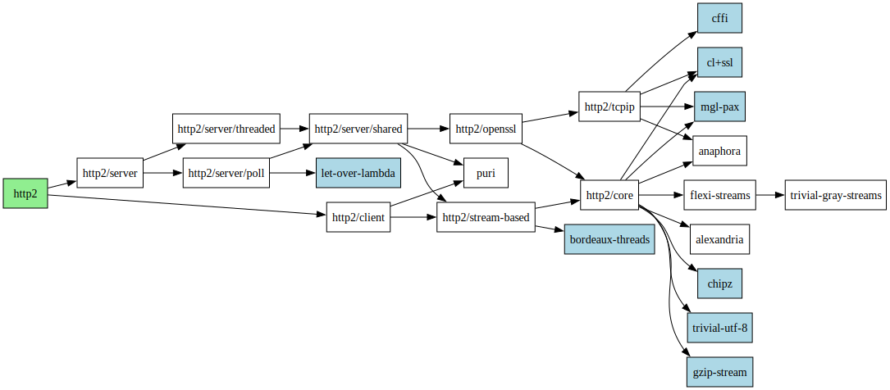

3 API documentation
3.1 Systems and packages
The library is split to several subsystems. Most of them depend on other quicklisp-loadable components, see the graph.

-
Version: 2.0.3
Description: HTTP/2 library, including a sample client and server.
The system also supports TEST-OP to run the test suite.
Depends on: http2/client, http2/server, http2/server/poll
-
- Version: 2.0.3
- Description: HTTP/2 server interface. Provides access to an implementation of a HTTP/2 server
- both for running the server and for defining content.
- Author: Tomáš Zellerin mailto:tomas@zellerin.cz
- Depends on: http2/server/poll, http2/server/threaded
[package] "HTTP2/SERVER" NICKNAMES ("HTTP2/SERVER/SHARED" "HTTP2/SERVER/POLL" "HTTP2/SERVER/THREADED")
Contains
Functions to start and stop of a HTTP/2 servers,
implementations of the servers (threaded and polled version),
HTTP2server connections andHTTP2streams,macros to define content for the served pages.
-
HTTP/2 client functions, in particular,
RETRIEVE-URL.
3.2 HTTP/2 client API
[in package HTTP2/CLIENT]
There is a simple client in the package http2/client.
[function] RETRIEVE-URL URL &REST PARS &KEY METHOD CONTENT CONTENT-FN ADDITIONAL-HEADERS CONTENT-TYPE CHARSET GZIP-CONTENT &ALLOW-OTHER-KEYS
Retrieve
URL(a string) through HTTP/2 over TLS.See
FETCH-RESOURCEfor documentation of the keyword parameters.Example:
(http2/client:retrieve-url "https://example.com") ==> "<!doctype html> ... <html> ... <head> ... <title>Example Domain</title> ... ... <meta charset="utf-8" /> ... <meta http-equiv="Content-type" content="text/html; charset=utf-8" /> ... <meta name="viewport" conten...[sly-elided string of length 1256]" ==> 200 (8 bits, #xC8, #o310, #b11001000) ==> (("content-length" . "1256") ("x-cache" . "HIT") ("vary" . "Accept-Encoding") ... ("server" . "ECS (bsb/27E0)") ... ("last-modified" . "Thu, 17 Oct 2019 07:18:26 GMT") ... ("expires" . "Thu, 28 Sep 2023 19:38:44 GMT") ... ("etag" . "\"3147526947+ident\"") ("date" . "Thu, 21 Sep 2023 19:38:44 GMT") ... ("content-type" . "text/html; charset=UTF-8") ... ("cache-control" . "max-age=604800") ("age" . "151654")) ==> "/" ==> #<VANILLA-CLIENT-CONNECTION > ==> NIL ==> "HTTP2 does not provide reason phrases"The individual values are:
body of the reply (response data) - string or array
status code as integer
alist of response headers
the
URLthe reply came from (bogus value for Drakma compatibility)the connection the reply comes from (not network stream as in Drakma, but same purpose - can be reused for ruther queries.)
whether connection is closed (passed as parameter)
reason phrase (bogus value)
[function] REQUEST-HEADERS METHOD PATH AUTHORITY &KEY (SCHEME "https") CONTENT-TYPE GZIP-CONTENT ADDITIONAL-HEADERS
Encode standard request headers. The obligatory headers are passed as the positional arguments.
ADDITIONAL-HEADERSare a list of conses, each containing header name and value.
[function] DRAKMA-STYLE-STREAM-VALUES RAW-STREAM &KEY CLOSE-STREAM
Return values as from
DRAKMA:HTTP-REQUEST. Some of the values are meaningless, but kept for compatibility purposes.
3.3 Server API reference
[in package HTTP2/SERVER with nicknames HTTP2/SERVER/SHARED, HTTP2/SERVER/POLL, HTTP2/SERVER/THREADED]
3.3.1 Server classes
The server behaviour is defined by used dispatcher (server class). The class is
specified as a parameter to the START function.
The dispatcher should be a subclass of the BASE-DISPATCHER and can use predefined mixins to specify:
How to handle multiple connections (
THREADED-DISPATCHER,POLL-DISPATCHER-MIXIN,SINGLE-CLIENT-DISPATCHER)For threaded dispatcher to add
TLSwrapping (TLS-DISPATCHER-MIXIN)To run the server in separate thread (
DETACHED-SERVER-MIXIN).
Some predefined combinations are below.
[class] DETACHED-POLL-DISPATCHER DETACHED-SERVER-MIXIN POLL-DISPATCHER
Detached version of the
POLL-DISPATCHER.
[variable] *VANILLA-SERVER-DISPATCHER* NIL
Default value of the server dispatcher. One of
DETACHED-TLS-THREADED-DISPATCHERotPOLL-DISPATCHER
Server mixins and component classes
[class] THREADED-DISPATCHER BASE-DISPATCHER
Specialize
DO-NEW-CONNECTIONto process new connections each in a separate thread.
[class] POLL-DISPATCHER-MIXIN FDSET-MANAGER
Uses poll to listen to a set of clients and handle arriving packets in a single thread.
Maximum number of clients is fixed (by default fdset-size, by default 10). Additional clients wait until one of existing client leaves.
Timeouts can be specified for polling.
[class] SINGLE-CLIENT-DISPATCHER BASE-DISPATCHER
Handle the connection while doing nothing else.
Serve just one client at time: when it connects, read the incoming requests and handle them as they arrive. When the client sends go-away frame, close the connection and be ready to serve another client.
Obviously, there is little overhead and this version is actually pretty fast - for one client and in ideal conditions (especially with request pilelining).
[class] TLS-DISPATCHER-MIXIN EASY-CERTIFICATED-CONTEXT-MIXIN H2-SERVER-CONTEXT-MIXIN BASE-DISPATCHER
Specializes
SERVER-SOCKET-STREAMto addTLSlayer to the created sockets, andSTART-SERVER-ON-SOCKETto use a context created by MAKE-HTTP2-TLS-CONTEXT.
3.4 Logging support
[in package HTTP2/SERVER with nicknames HTTP2/SERVER/SHARED, HTTP2/SERVER/POLL, HTTP2/SERVER/THREADED]
Server should log some basic information.
Current implementation logs to the *STANDARD-OUTPUT* via *LOG-STREAM*. The
format is the peer name (see GET-PEER-NAME) and actual message.
What is logged:
Client connected - see
LOG-SERVER-CONNECTED, separate invocation from theClient disconnected
- [variable] *LOG-STREAM* #<SYNONYM-STREAM :SYMBOL *STANDARD-OUTPUT* {700664BA93}>